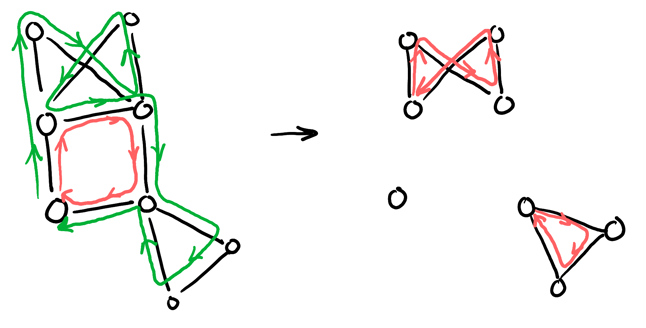
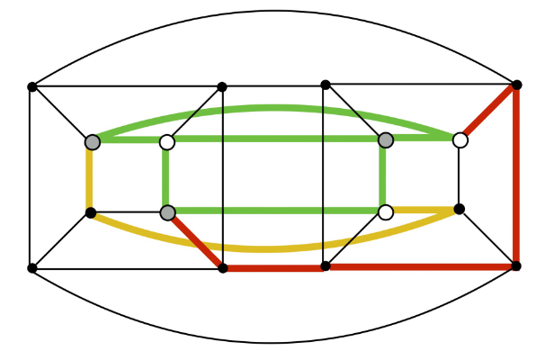

Graphs
Table of Contents
1. Graphs
A graph \(G\) is a set of vertices, \(V\), connected by some amount of edges, \(E\), represented by:
\begin{align} G = (V, E) \notag \end{align}We can represent a graph graphically like so:
Algebraically, the above graph would be:
\begin{align} V &= \{ a, b, c, d ,e \} \notag \\ E &= \{\{a, e\}, \{a, d\}, \{d, c\}, \{c, b\}. \{b, e\}\} \notag \end{align}1.1. Terminology
There is some helpful terminology that we use when we are talking about graphs. Given the following two nodes \(u\) and \(v\) connected by an edge \(e\):
We call \(u\) and \(v\) adjacent or neighbors, and the edge \(e\) is incident on \(u\) and \(v\). The degree of \(v\) is defined as the number of neighbors it has, and if it has degree \(0\) then the node is called isolated.
Graphs can either be directed or undirected. Directed graphs specify the direction of its edges, whereas undirected graphs do not. Notice that undirected graphs can be seen as a special case of a directed graph, just with each edge having a "pair" of directed edges both going out and in from a node. For directed graphs, we make a distinction between the in-degree and out-degree of a node.
An undirected graph is connected if there is a path from any vertex to any other vertex. Any graph, connected or not, can be decomposed into connected components. For a directed graph, the term is strongly connected if there is a directed path from every vertex to every other vertex.
A path is a sequence of edges that does not revisit a vertex.
A cycle is a path where the first and last vertex are the same.
A walk is any sequence of edges (more general version of a path).
A tour is a walk where the first and last vertex are the same (more general version of cycle).
The following table summarizes the above four terms:
| Type | no repeated vertices | no repeated edges | start = end |
|---|---|---|---|
| Walk | |||
| Path | ✓ | ✓ | |
| Tour | ✓ | ||
| Cycle | ✓ | ✓ |
1.2. Eulerian Tours
Graph theory has its origins in a pastime of the residents of Königsberg, Prussia (present-day Kaliningrad, Russia). The city had two islands in the middle of the river that ran through the city, with bridges connecting the islands. The residents wanted to find a way to cross all seven existing bridges once (without repeating) and end up where they started. We can model this as a graph:
The two nodes in the center are the islands. A tour that visits every edge exactly once and comes back to the same vertex that it started from is known as an Eulerian tour: a tour that traverses each edge exactly once.°
The answer is that it is impossible for this to work in Königsberg. Intuitively, it can be seen as since there is an odd number of bridges, there is no way for one to cross back after crossing to an island. Euler formalized this intuition in the following theorem:
Theorem (Euler 1736): A connected graph has an Eulerian tour if and only if the degree of every vertex is even.
1.2.1. Proof
We now attempt to prove the above theorem. First, we must prove the forward direction of the if and only if statement: if a graph has an Eulerian tour, then the degree of every vertex is even.
A tour must enter and exit every vertex in pairs. However, since we can only use one path once, they must do so on different edges. Therefore, edges must exist in "pairs" at each vertex, which means that the total number of edges at each vertex must be even.
Now, we have to prove the reverse case: if each vertex in a graph has an even degree, then there must exist an Eulerian tour. To do so, assuming that all vertex degrees are even, we want to come up with some algorithm that always outputs an Eulerian tour given a graph that satisfies those conditions.
- Lemma
We start by proving the lemma that the following subroutine
FindTourwill always yield a tour that will not visit an edge more than once (not necessarily an Eulerian tour):SUBROUTINE FindTour(G, s) START at s REPEAT CHOOSE any untraversed edge incident on current vertex TRAVERSE the edge UNTIL stuck RETURN the tour formed by the traversed edgesSince by definition the algorithm will only travel on untraversed edges, what we need to prove is that
FindTour(G, s)will always get stuck at \(s\): in other words, it always ends up where it started.Realize that for any vertex \(v \neq s\), whenever our tour arrives at \(v\) it has used up an odd number of deges, which means there always exists an "escape" edge available.
The only case where an escape edge is unavailable is at \(s\), because whenever the tour arrives back at \(s\) it hsa used up an even number of the edges incident to \(s\), so it can get stuck at \(s\). Since it must get stuck somewhere as there are only a finite number of edges, it must get stuck at s. Thus, we have proved the lemma.
- Algorithm
We now introduce our final algorithm for finding an Eulerian tour:
ALGORITHM Euler(G, s) LET T = FindTour(G, s) REMOVE edges of T from G LET {G1, ..., Gk} = connected components of the remaining graph LET {s1, ..., sk} = first vertex of Gi visited by T OUTPUT Splice(T, Euler(G1, s1), ... Euler(Gk, sk))The idea here is that we can use any subtour to break up a graph into connected components, and then recursively find tours for each component, and finally stitch them together to become an Eulerian tour:

We claim that this algorithm will always output a valid Eulerian tour for a connected graph with an even degree for every vertex. To prove this, we proceed via strong induction. The base case of edges \(m = 0\) holds, because then \(G\) is empty.
Assuming that
Euler(G, s)outputs an Eulerian tour in \(G\) for any even degree, connected graph with \(m \geq 0\) edges, we want to prove it does the same for a graph with \(m+1\) edges.Suppose that \(G\) has \(m+1\) edges. Recall that
T = FindTour(G,s)will always output a tour, and therefore has an even degree at each vertex. Thus, when we remove the edges of \(T\) from \(G\), we end up with vertices that still have even degrees (since even minus even is still even) — but may be disconnected. Each connected component has less than \(m\) edges, and by our inductive hypothesis our algorithm outputs an Eulerian tour for each component. Then, splicing them together yields an Eulerian tour for \(G\).This concludes our inductive step, and we have proven that the algorithm outputs an Eulerian tour given a connected graph with an even degree for every vertex. Thus, we have proven that a connected graph has an Eulerian tour if and only if the degree of every vertex is even. \(\square\)
2. Trees
An undirected graph $G4 with \(n\) vertices is a tree if either of the following equivalent conditions holds:
- \(G\) is connected and contains no cycles.
- \(G\) is connected and has \(n-1\) edges.
Leaves are nodes with degree \(1\). Oftentimes, trees are defined with a root, which also give us levels. Note that trees are minimally connected, because you only remove one edge to disconnect a tree.
Next, we would like to prove that the above conditions are equivalent.
Theorem: \(G\) is connected and has \(n-1\) edges if and only if \(G\) is connected and has no cycles (the two statements are equivalent).
Proof: First, we prove the forward case. We proceed by contradiction. Let \(G\) be connetced and have \(n-1\) edges. Suppose for contradiction that \(G\) contains a cycle. Then we can delete any edge of the cycle and the graph remains connected.
So, we get a graph with only \(n-2\) edges that is connected. But, we need at least \(n-1\) edges to connect \(n\) vertices, so we have a contradiction!
Next, we need to prove the reverse case: if \(G\) is connected and has no cycles, then \(G\) is connected and has \(n-1\) edges. We proceed by induction on \(n\).
The base case \(n=1\) holds, as a graph with only one vertex has zero edges.
Now, we assume that this is true for \(1 \leq n \leq k\), and we want to prove that it also holds for \(n = k+1\). Suppose that \(G\) has \(k+1\) vertices, connected, and with no cycles. Removing one vertex \(V\) from \(G\) results in a new graph \(G'\) that still has no cycles.
\(G'\) now consists of connected components \(G'_1, G'_2, \dots, G'_l\), with \(G'_i\) having \(k_i\) vertices. By our inductive hypothesis, each connected component \(G'_i\) has no cycles, so it must have \(k_i-1\) edges. So \(G\) has \(\sum_{i=1}^l (k_i-1) + l = \sum_{i=1}^l k_i=k\) edges, and we are done. \(\square\)
3. Complete Graphs
The complete graph on \(n\) vertices, \(K_n\), is the graph that contains all possible edges (so the number of edges is \(\frac{n(n-1)}{2}\)). While a tree is minimally connected, a complete graph is maximally connected as you have to remove at least \(n-1\) edges to disconnect a complete graph:
We can also define a complete bipartite graph \(K_{n,m}\), a graph whose vertices can be divided into two subsets of \(n\) and \(m\) vertices respectively, where no edge has both endpoints in the same set, and every possible edge that connects vertices in different subsets is part of the graph:
4. Planar Graphs
A planar graph is a graph that can be drawn on the plane so that none of its edges cross. Planar graphs are often desired because they are easy to visualize, gives rise to efficient algorithm, and have nice properties (e.g. colorable with four colors° ). Some examples of planar graphs:
4.1. Euler's Formula
Theorem (Euler's Formula): Any planar drawing of a connected graph satisfies the equation:
\begin{align} \boxed{v- e + f = 2} \end{align}where \(v\) is the number of vertices, \(e\) is the number of edges, and \(f\) is the number of faces. Faces are regions of the plan that are bounded by edges, including the exterior face (the space surrounding the graph).
Proof: We proceed by induction on the number of faces \(f\). The base case \(f=1\) implies that our graph is a tree, which means \(e=v-1\). Then, \(v-e+f = v-v+1+1=2\), and so the base case is true.
Now, assuming that the formula holds for any drawing with \(f-1\) faces (\(f \geq 2\)), we want to prove that it also holds for \(f\) faces. Take any planar drawing of graph \(G\) with \(f\) faces, \(e\) edges, and \(v\) vertices. Deleting an edge such that the new drawing has \(f-1\) faces, \(e-1\) edges, and \(v\) vertices is always possible for a graph with more than 2 faces. Then by our inductive hypothesis, we have:
\begin{align} v- (e-1) + (f-1) &= 2 \notag \\ v-e+f &= 2 \notag \end{align}The inductive step is complete, and we are done. \(\square\)
Corollary: Any connected planar graph with at least \(2\) edges satisfies \(e \leq 3v-6\).
Proof: If we draw the graph \(G\) in the plane, then it must satisfy \(e=v+f-2\) by Euler's Formula. For each face \(F_i\), let \(s_i\) be the number of sides of \(F_i\). Then \(\sum_{i=1}^f s_i = 2e\), since each edge is the side of exactly two faces. Also, \(s_i \geq 3 \Rightarrow 2e \geq 3f\). Then
\begin{align} e &= v+ f-2 \notag \\ e &\leq v + \frac{2e}{3} - 2 \notag \\ e &\leq 3v - 6 \notag \quad \square \end{align}4.2. Kuratowski's Theorem
Kuratowski's Theorem: A graph \(G\) is planar if and only if \(G\) does not contain \(K_5\) or \(K_{3,3}\).
The phrase "\(G\) contains \(H\)" means that we can find a copy of \(H\) inside \(G\), where vertices of \(H\) are distinct vertices of \(G\) and edges of \(H\) are disjoint paths° in \(G\).
For example, we can find a copy of \(K_{3,3}\) inside of a 4-dimensional hypercube, and so therefore it cannot be planar:

5. Connectivity
Oftentimes, we use graphs to model a communication network where vertices are nodes and edges are links. In such a network, all nodes must be able to communicate, and so \(G\) must be connected.
In a real-world system, links (edges) may fail! Thus, we often want to optimize the following parameters of our graph:
- Number of edges: the more edges or links, the more resistant it is to links failing.
- Cost: the more edges or links, the more expensive it is to set up a system.
- Diameter: diameter is defined as the longest distance between any pair of vertices, which we want to be small.
Considering the two extremes of graphs, we can evaluate them based on these parameters:
- Tree: very fragile as any edge failure disconnects the network but very cheap (lowest number of edges).
- Complete graph: very robust as it sustains the maximum number of edge disconnects, but is very expensive (oftentimes overkill).
There is a topology that exists between these two extremes, and is particularly well suited for optimizing our communication network.
5.1. Hypercube
This type of graph is known as the hypercube, where \(H_n\) denotes the \(n\) dimensional hypercube. The hypercube is defined such that if we assign every node a unique \(n\) bit binary string, then we connect nodes that differ in one bit:
It can also be seen that \(H_n\) consists of two copies of \(H_{n-1}\) with all the vertices in each matched up one-to-one.
The hypercube has some nice properties:
\begin{align} &2^n \:\left(N\right) &\text{ vertices} \notag \\ &n2^{n-1} \:\left(\frac{N}{2}\log_2N\right) &\text{ edges} \notag \\ &n \:\left(\log_2 N\right) &\text{ degree for all vertices} \notag \\ &n \:\left(\log_2 N\right) &\text{ diameter} \notag \end{align}Most importantly, let \(S \subseteq V\) be the subset of vertices such that \(|S| \leq \frac{|V|}{2}\), and \(E_s\) be the set of edges connecting \(S\) to \(V \setminus S\). Then, it can be shown that \(|E_s| \geq |S|\), or the minimum number of edges that are needed to be disconnected is at least \(|S|\).
Theorem: In \(H_n\), for any set \(S\) as above, \(|E_s| \geq |S|\).
Proof: We proceed by induction on \(n\). The base case \(n=1\) is true since \(|S|=1\) and \(|E_s|=1\).
Now, we assume that the theorem is true for \(H_k\), and we want to prove the theorem for \(H_{k+1}\). Let $S \subseteq V(H_{k+1})4 with \(|S| \leq 2^k\) (the number of vertices).
Now, since a hypercube is just the connection of two smaller subcubes, we can write \(S = S_0 \cup S_1\), where \(S_0\) and \(S_1\) are the parts of \(S\) that are in the 0-subcube and 1-subcube respectively:
Now, assume without loss of generality that \(|S_0| \geq |S_1|\). Then we have two cases:
Case (i): \(|S_0| \leq 2^{k-1}\) and \(|S_1| \leq 2^{k-1}\)
Here, we can just apply the inductive hypothesis to each subcube, which gives us \(|E_s| \geq |S_0| + |S_1| \geq |S|\).
Case (ii): \(|S_0| > 2^{k-1}\)
Unfortunately, this is not covered under the inductive hypothesis. This is because in \(H_k\), there are \(2^k\) vertices, but we defined \(|S|\) to be less than half than it — so anything greater than \(2^{k-1}\) would not work.
However, this means that \(|S_1| = |S| - |S_0| < 2^{k-1}\). Then we can apply the inductive hypothesis to the 1-subcube, which gives us \(|S_1|\) edges. Furthermore, inductive hypothesis in the 0-subcube applied to \(V_0 \setminus S_0\) gives \(|V_0| - |S_0|\) edges. This works because the number of edges connecting \(S_0\) to \(V_0 \setminus S_0\) is the same as the number of edges connecting \(V_0 \setminus S_0\) to \(S_0\).
Finally, there are also crossing edges (edges between subcubes), which is at least \(|S_0| - |S_1|\) (since each vertex in one subcube is connected to a corresponding one in the other, there must be crossing edges for the surplus of \(S\) nodes on one side). Therefore, adding them all together we find that \(|E_s| \geq |S_1| + |V_0| - |S_0| + |S_0| - |S_1| = |V_0| = 26k \geq |S|\). \(\square\)